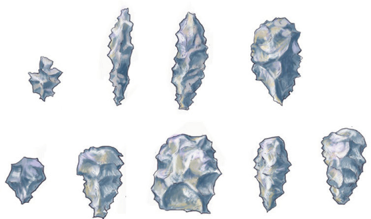
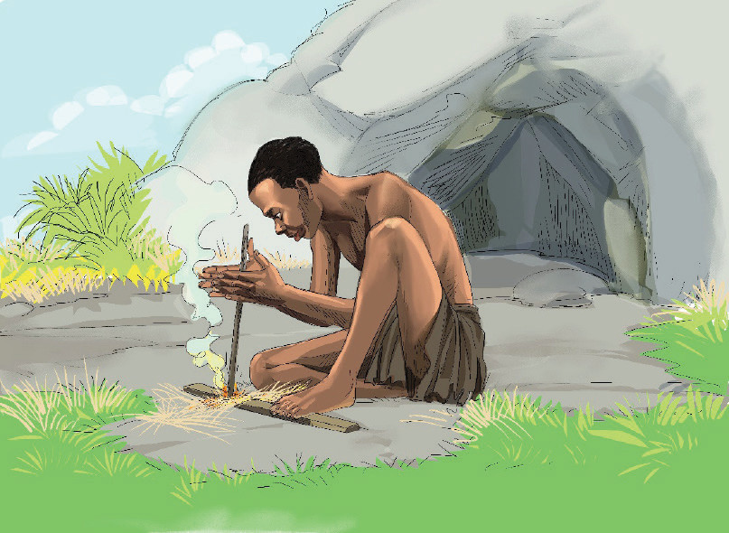

Middle Stone Age societies developed the culture of obtaining food by hunting and gathering. They also managed to live in different environments, such as grasslands, rock shelters, river valleys, riverine areas, and highlands. They also did rock painting and personal decoration. They also developed religions. The major technological developments during this period was the discovery and use of fire. Fire was made by striking stones against each other. Later on, they learnt how to make fire by hand drilling a stick on a dry wood, as illustrated in Figure 2.5. With fire and relatively advanced tools, human beings controlled their environment better than before. They managed to clear bushes and forests. This enabled them to live in thick woodland and mountainous regions. Evidence of the Middle Stone Age tools has been found at Koobi Fora and Chesowanja in Kenya and Swartkrans in South Africa.
